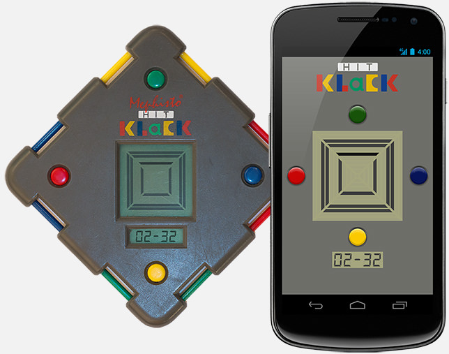
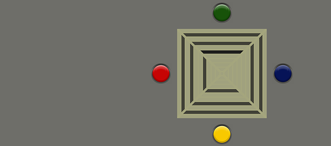

HitKlack Game
This is a work in progress game remake, just for fun. It's based on a German console, the Hit Klack from Mephisto. It runs on multiple platforms: Android, Windows, Linux, Mac and Web. For me it's a way to test the latest features of Kotlin 1.3, a programming language by Jetbrains. It uses the Korge - Modern Multiplatform Game Engine for Kotlin.

Instant Play
Downloads
Requires installed Java JRE. No audio support.
Requires to start a webserver in this folder.
Features
For now, only one of the two console games is implemented: The Box Game.
Features like restart, level
selection, game over, the clock and an instructions are not available yet.
Box-Game manual
It`s your objective to build squares out of four lines. The lines are running automatically but can be stopped by pressing the corresponding button: To stop a line running from left, press red. For a line running down, press blue, and so on. If you finish one square you can go ahead with the next. The first line of a square can be stopped on any empty field. The next three lines have to be stopped in the same square (ring). If a line is stopped on the wrong field, both the current square and the last built square will be cleared.